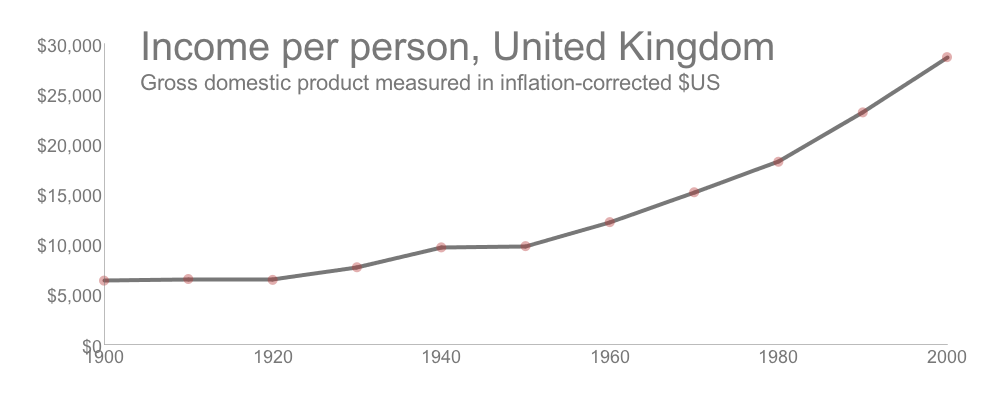
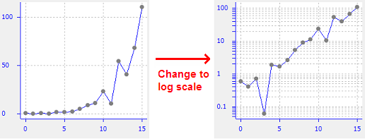

These types of charts visualize change in continuous variables over a period of time. Data is divided into subsets of time such as months, weeks, days, etc.. and the chart shows the change in this data during that time. These charts have a () trend which shows how the variable fluctuates; (2) seasonality which shows if variables have consistent/periodic fluctuations; and possibly (3) noise which shows if changes are simply random.
The chart below shows the income per person in the United Kingdom between 1900 and 2000. This chart is most likely midleading as it does not seem to account for inflation.
A logarithm scale can be used for data visualization to show tge rate of change over time. These types of charts show data over time with each period being compare to the previous period. They can be used for such things a population growth or bacterial growth as these are often exponential. The data is transformed using a log transformation into a ratio of how much the rate of change fluctuated.
The chart below shows a random chart and how it changes when using a logarithmic scale. This example is from a website SWTChart which allows you to easily edit your visualizations in ways such as using a logarithmic scale.
Cairo also discusses paradoxes that can appear in data and that these should be avoided in visualizations. He discusses Simpson's Paradox, which describes a phenomenon which happens when trends appear in data subsets but dissapear or seem reverse when the subsets are combined into one dataset. To show a clear and accurate visualization of data, it may be necessary to disaggregate data into subsets and show visualization for each rather than combining them and have a misleading visualization of data.
The chart below shows a humorous visual of how Simpson's Paradox can happen. The data for the chart is the number of several characters from the TV series "The Simpsons." Each set of Simpson's characters has a negatively sloped trend line, but the red trend line for the whole set of data shows is positvely sloped. Each Simpson character should be given their own trend line for the visualization to be accurate and not misleading.